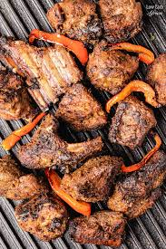

HOME
NYAMA CHOMA

Description:
Grilled meat served alongside ugali and sukuma wiki from Kenya
Ingredients:
- 2 kg of beef
- 1 tbsp ginger and garlic paste
- 1 tbsp of soy sauce
Steps:
- Marinade the beef with the ginger, garlic and soy sauce.
- Let the meat rest for 1 hour.
-
Grill over medium heat untile tender turning regularly to avoid burning.
-
Let the meat rest for 10 minutes after cooking before serving to retain
juices.